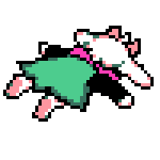

{{ post.title }}
{{ post.date | date: "%d %B %Y" }}
{% for tag in post.tags %}
{{ tag }}
{% endfor %}
 LATEST BLOG POST
LATEST BLOG POST
Yo. thanks for stopping by! this site is under construction and probably won't ever be completely done.
I'm a cybersec professional that's been touching computers ever since i was 4. i love reading and i love listening to AND making music. i play the drums since i was 11 and i recently got into playing bass because of Scott Pilgrim (and i suck ass at it, but i love every second)
I'm a huge nerd. always have been. i am extremely interested in electronics, in gaming, programming, hacking, fantasy, sci-fi, etc.
